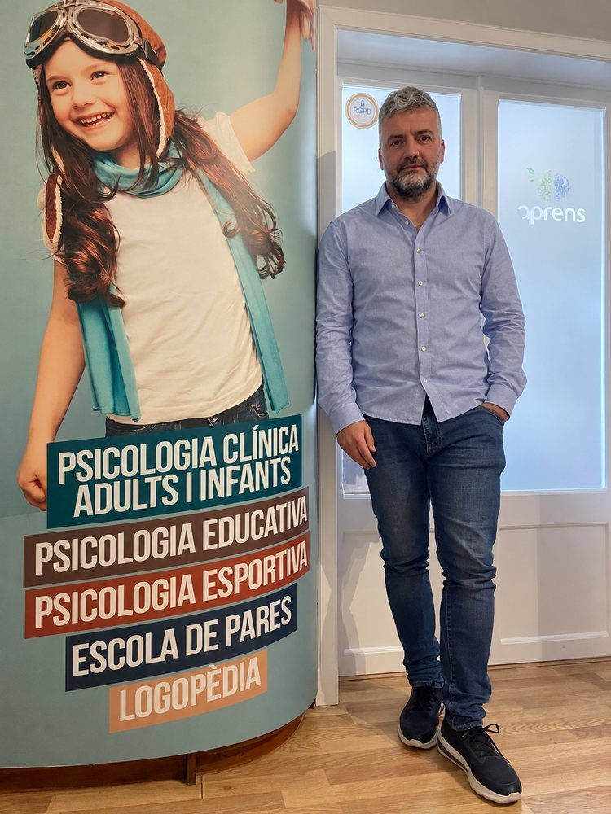
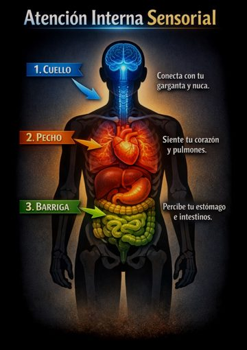

Un lloc on trobar les eines, la consulta i les novetats d'APRENS
APRENS és el gabinet de psicologia de Tòfol Villalonga a Inca. Des d'aquí pots entrar a les eines que feim servir a teràpia, demanar cita o conèixer la consulta, i seguir el que anam publicant.

Entrades
Per a pacients
App APRENS
Les eines de teràpia (AIS, TEC, registres i pràctiques) al teu mòbil. El que hi apuntes es queda al teu dispositiu.
Consulta
Demanar cita
Tria dia i hora a Doctoralia, per a una primera visita o una sessió.
Gabinet
La consulta: aprens.es
Teràpies, equip, serveis i contacte del gabinet d'Inca.
Estudi
Explica-ho
Una eina per organitzar els apunts, repassar amb preguntes i corregir exercicis.
Per a psicòlegs
Laboratori TEC
La Teoria de l'Efecte Conscient feta laboratori: entendre el model, practicar l'AIS i mesurar-ne el canvi.

Apps per a iPhone
Sessions guiades d'Atenció Interna Sensorial (AIS): portar l'atenció al coll, al pit i a la panxa per baixar l'alerta i estar amb un mateix.
Destacats
Novetats i aparicions
Vídeos
Explicacions curtes, en castellà, sobre l'atenció, el cos i la Teoria de l'Efecte Conscient.
Llibres
La col·lecció completa «Crece, cría y trasciende desde dentro» → Tots els llibres de l'autor a Amazon →
El despatx i el dia a dia
Contacte
636 93 76 61 · WhatsApp · info@aprens.es
C/ Mare de Déu de l'Esperança, 70, 2n · 07300 Inca (Mallorca)
Horari: de 9 a 21 h